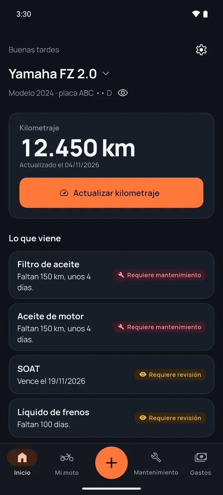
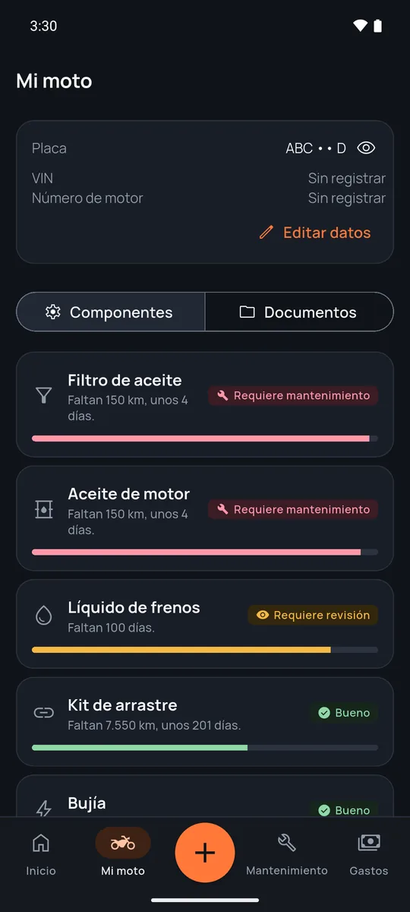
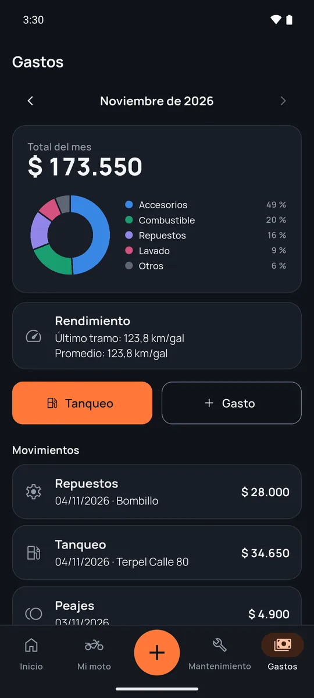
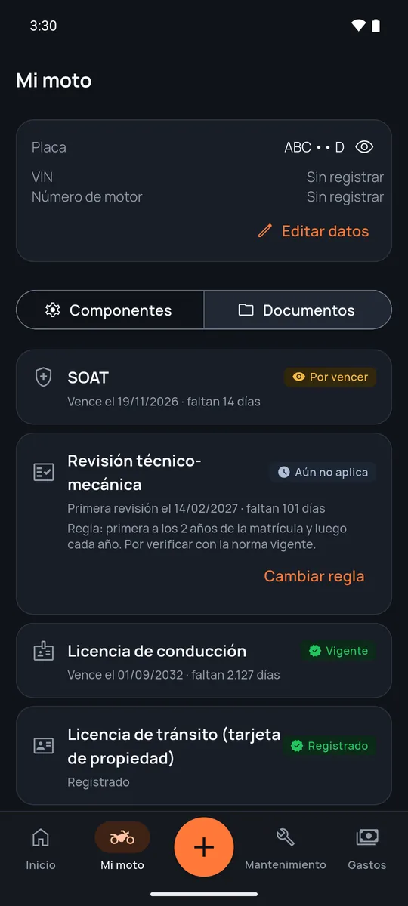
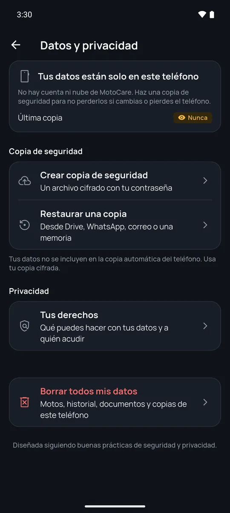

Tu moto al día, sin hacer cuentas
MotoCare lleva el kilometraje, los mantenimientos, los gastos y los documentos de tu moto, y te avisa antes de que algo se pase. No tienes que crear una cuenta: todo se guarda cifrado en tu teléfono.
Para Android. Escríbenos con tu correo de Google Play y te sumamos a la prueba.

Cómo funciona
Lo configuras una vez y después solo actualizas el kilometraje. MotoCare hace las cuentas por ti.
-
Registra tu moto
Eliges tu país, la marca, el modelo y el año. Con el país, la app usa tu moneda y el nombre de tus documentos.
-
Pon los intervalos
Cada cuántos kilómetros o meses toca cada cosa, tal como dice tu manual o te recomienda tu taller.
-
Actualiza el kilometraje
Cuando tanqueas o cuando te acuerdes. Con eso MotoCare sabe cuánto le falta a cada pieza.
-
Recibe los avisos
Te avisa antes de un mantenimiento y antes de que venzan el seguro, la revisión o la licencia.
Mueve el kilometraje y mira qué le toca
Así calcula MotoCare el estado de cada pieza: compara lo que llevas recorrido desde el último cambio con el intervalo que pusiste.
Moto de ejemplo con intervalos de ejemplo. En la app pones los de tu manual o tu taller, por kilómetros, por meses o por ambos.
Aceite de motor
Filtro de aire
Pastillas de freno
Kit de arrastre
Bujía
Todo lo de tu moto en un solo lugar
Cada pieza con su estado
Aceite, filtros, frenos, kit de arrastre, llantas, bujía y más. Ves de un vistazo qué está bien, qué conviene revisar y qué ya toca cambiar.
- Marca lo que hiciste con un toque y el contador vuelve a empezar.
- Consulta el historial de todo lo que le has hecho a la moto.

Gastos y rendimiento
Registra tanqueos, repuestos, lavadas, peajes y estacionamiento en tu moneda. MotoCare te dice cuánto te cuesta rodar cada mes y cuántos kilómetros haces por galón o por litro.
- Resumen del mes por categoría.
- Foto de la factura, guardada cifrada.

Tus documentos al día
MotoCare conoce los documentos de tu país y te avisa a los 30 días, a los 7 días y el día en que vencen. Puedes guardar la foto de cada uno para mostrarla cuando te la pidan.
- Colombia
- SOAT, revisión técnico-mecánica, licencia de conducción
- México
- Tarjeta de circulación, verificación vehicular, licencia
- Chile
- Permiso de circulación, SOAP, revisión técnica
- Argentina
- Seguro obligatorio, VTV o RTO, licencia de conducir
- Brasil
- CRLV-e, CNH

Tus datos son tuyos
MotoCare no tiene cuentas ni servidores con tu información. Lo que guardas se queda en tu teléfono.
- La base de datos y las fotos van cifradas en el teléfono.
- A las fotos se les quita la ubicación y los datos de la cámara antes de guardarlas.
- Haces una copia de seguridad cifrada con tu contraseña y la guardas donde quieras: Drive, WhatsApp, correo o una memoria.
- Exportas todo en CSV o JSON, o lo borras con un toque.

Gratis para tu moto
Todas las funciones son gratis para una moto. Si quieres quitar los anuncios o llevar varias motos, está el plan anual.
Gratis
Con anuncios
- Una moto con todas las funciones.
- Avisos, gastos, documentos, fotos y copias de seguridad.
- Tú decides si los anuncios son personalizados o no.
Plan anual sin anuncios
Precio en tu moneda en Google Play
- Sin anuncios.
- Varias motos en la misma app.
- Se renueva cada año y lo cancelas cuando quieras desde Google Play.
Hecha para Latinoamérica
En español y en portugués, con la moneda, la unidad de combustible y los documentos de cada país.
- Argentina
- Bolivia
- Brasil
- Chile
- Colombia
- Costa Rica
- Ecuador
- El Salvador
- Guatemala
- Honduras
- México
- Nicaragua
- Panamá
- Paraguay
- Perú
- República Dominicana
- Uruguay
- Venezuela
Preguntas frecuentes
¿Tengo que crear una cuenta?
No. MotoCare no pide correo ni contraseña. Abres la app, registras tu moto y empiezas.
¿Qué pasa si cambio o pierdo el teléfono?
Como los datos solo están en tu teléfono, haz una copia de seguridad desde Datos y privacidad. Es un archivo cifrado con tu contraseña que guardas en Drive, WhatsApp o tu correo, y lo restauras en el teléfono nuevo. Sin esa contraseña nadie puede abrirlo, ni siquiera nosotros.
¿De dónde salen los intervalos de mantenimiento?
Los pones tú, con lo que dice el manual de tu moto o lo que te recomienda tu taller. La app no inventa intervalos; los estados son una guía y la última palabra la tiene tu mecánico.
¿Funciona sin internet?
Sí. Todo funciona sin conexión. Solo los anuncios del plan gratis y la compra del plan anual necesitan internet.
¿Está para iPhone?
Por ahora MotoCare es para Android. La versión para iPhone viene más adelante.
¿Cómo borro mis datos?
Desde Datos y privacidad, con "Borrar todos mis datos", o desinstalando la app. Los pasos están en cómo borrar tus datos.
Sé de los primeros en usarla
MotoCare está en prueba cerrada antes de salir en Google Play. Si tienes Android y moto, escríbenos y te sumamos.